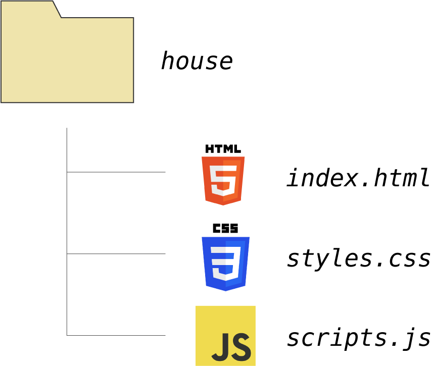
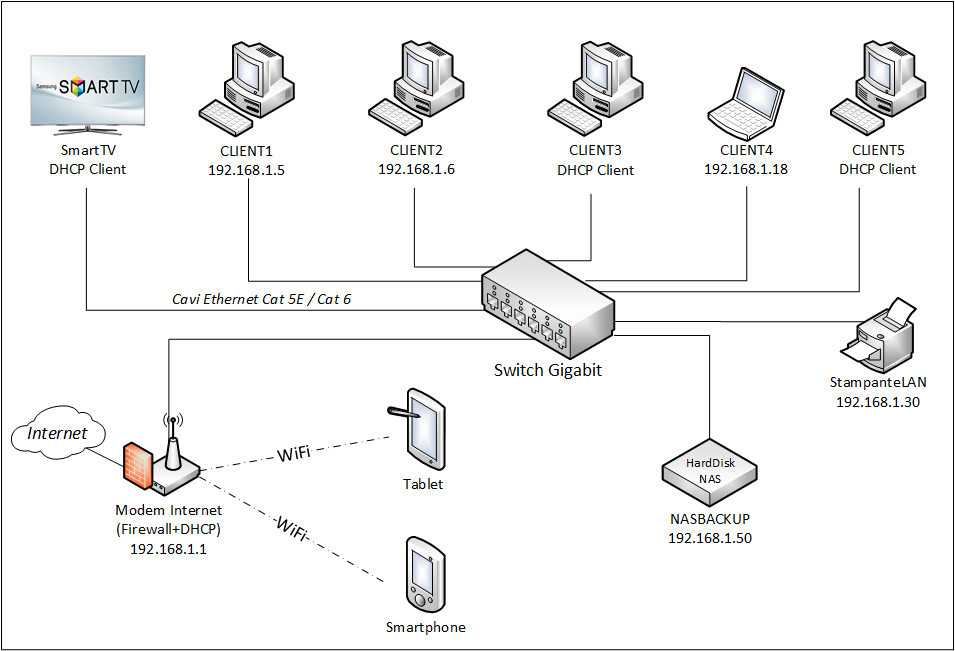

DISPOSITIVI INFORMATICI
per dispositivi informatici si itende uso di communicazione

Computer
Sigla di personal computer, con il quale erano storicamente indicati i calcolatori realizzati dall'IBM per il grande pubblico a partire dai primi anni 1980 e con il quale si è andati progressivamente indicando tutti i calcolatori, sia fissi o desktop, sia portatili, o laptop, per uso personale.

Server
Il server (servitore in inglese) è un elemento informatico e delle telecomunicazioni che elabora e gestisce le informazioni su una rete, restituendole a tutti coloro che ne fanno richiesta (clients)!
Switch
Uno switch è un dispositivo in una rete di computer che collega insieme altri dispositivi. Più cavi di rete sono collegati a uno switch per abilitare la comunicazione tra diversi dispositivi.
LINGUAGGI DI PROGRAMMAZIONE
i linguaggi di programmazione usati nei pc

HTML
CSS
JAVASCRIPT
C++
NODE.JS
C#
BOOSTRAAP
REACT
JAVA
PHP
Come funzionano i dispositivi del informatica
L'hardware costituisce la componente fisica di un sistema informatico ed è composto da una vasta gamma di dispositivi elettronici. Tra i principali componenti hardware ci sono la CPU (unità di elaborazione centrale), che funge da cervello del computer, la memoria RAM (memoria ad accesso casuale) che memorizza temporaneamente i dati e le istruzioni in uso, e le unità di archiviazione come hard disk e SSD, che conservano i dati in modo permanente. Le schede madre fungono da "scheletro" su cui sono montati gli altri componenti e permettono la comunicazione tra di essi tramite il bus di sistema. Le schede grafiche o GPU sono dedicate al rendering di immagini e alla grafica ad alte prestazioni, essenziali per i videogiochi e le applicazioni di grafica intensiva. Le periferiche di input/output, come mouse, tastiera e monitor, consentono all'utente di interagire con il computer.
Uno switch è un dispositivo di rete che opera a livello 2 (livello datalink) del modello OSI. Il suo compito principale è quello di instradare il traffico all'interno di una rete locale (LAN), basandosi sugli indirizzi MAC dei dispositivi connessi. Gli switch creano una tabella di inoltro (detta anche tabella MAC) che associa gli indirizzi MAC ai relativi porti di connessione. Quando un pacchetto dati arriva allo switch, questo determina il percorso migliore per inoltrarlo basandosi sulla tabella MAC, migliorando l'efficienza del trasferimento dati rispetto agli hub. Gli switch possono essere gestiti o non gestiti: quelli gestiti offrono funzionalità avanzate come il monitoraggio del traffico, la configurazione remota e la sicurezza avanzata. Sono disponibili anche switch intelligenti che possono essere configurati per fornire servizi aggiuntivi come il controllo degli accessi e la gestione del traffico prioritario.
Un router è un dispositivo di rete che opera a livello 3 (livello di rete) del modello OSI e funge da gateway tra reti diverse. La sua principale funzione è quella di instradare i pacchetti di dati tra reti locali (LAN) o tra una LAN e una rete esterna, come Internet. I router utilizzano tabelle di routing per determinare il percorso migliore per inoltrare i pacchetti, basandosi sull'indirizzo IP di destinazione. Possono anche eseguire funzioni di Network Address Translation (NAT) per consentire a più dispositivi di condividere lo stesso indirizzo IP pubblico. I router possono essere cablati o wireless e possono essere configurati per supportare varie tecnologie di rete, come Ethernet, Wi-Fi, DSL o fibra ottica. Oltre alla funzione di instradamento, i router offrono spesso funzionalità di sicurezza, come firewall e VPN, per proteggere la rete dagli accessi non autorizzati. Sono elementi cruciali nelle infrastrutture di rete moderne, consentendo la connettività e la comunicazione tra reti locali e reti esterne.
